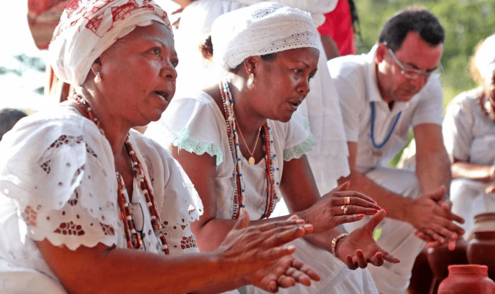
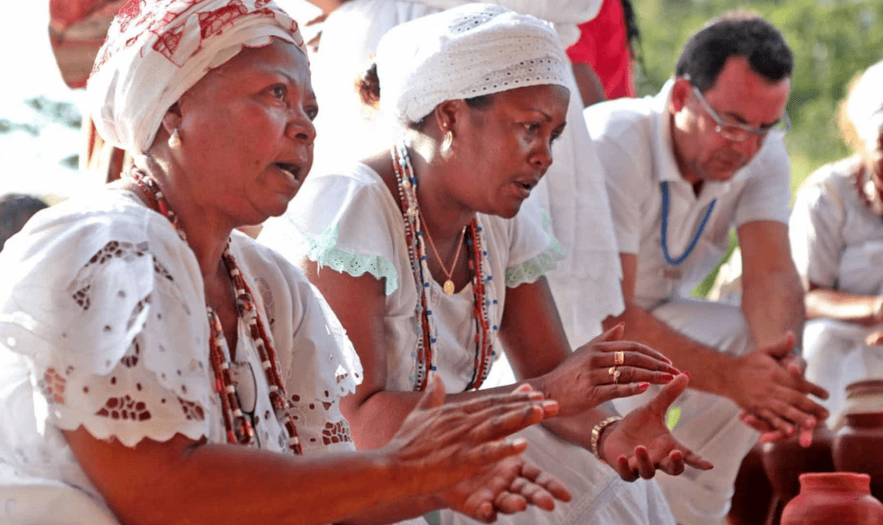
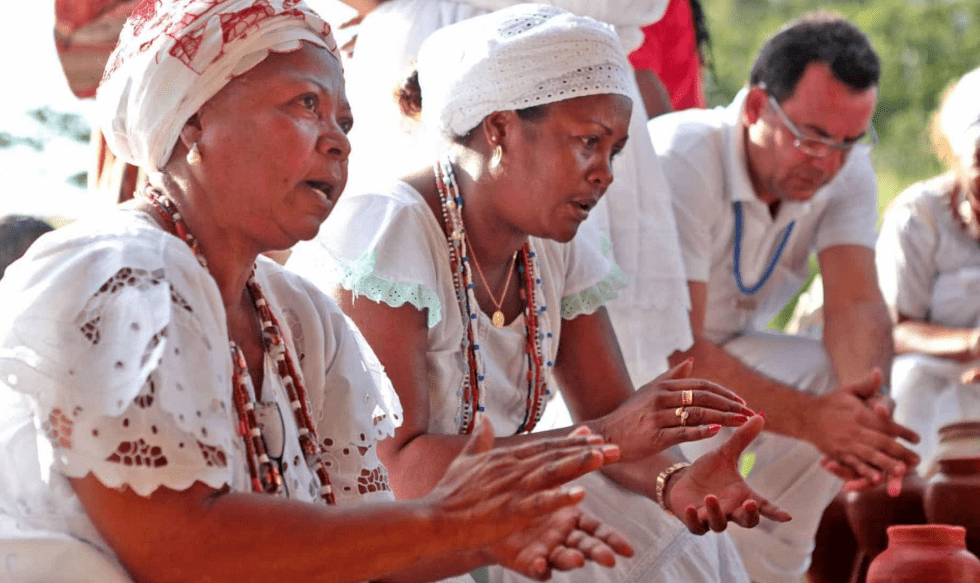
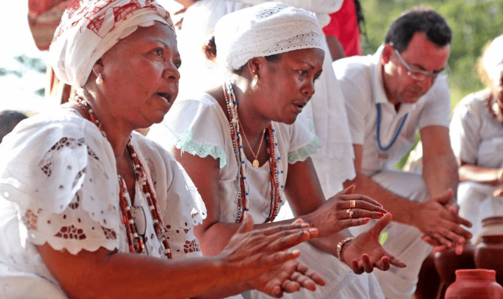

Cultura africana é vasta e diversificada, dotada de uma enorme riqueza imaterial, fator que se explica tanto pela diversidade de etnias presentes na África quanto pela influência de povos do Oriente Médio e europeus que tiveram contato com os africanos ao longo da história. A combinação dos fatores migratórios, da colonização europeia e da diversidade étnica no interior do continente fez com que a África seja atualmente um continente em que se fala vários idiomas e cultua-se várias religiões e que se caracteriza por ser pluricultural


Comidas: O acarajé, axé, babá, berimbau, búzios, cachaça, caçula, cafuné, Candomblé, canjica, capoeira, dendê, empacar, farofa, fofoca, fubá, gogó, Iemanjá, miçanga, maracatu, mingau, mochila, moleque, nenê, pamonha, quindim, samba, tagarela, tango, tutu, vatapá, xodó e zangar.
A música tradicional da África, dada a vastidão do continente, é historicamente antiga, rica e diversificada, com diferentes regiões e nações da África tendo muitas tradições musicais distintas. A música na África é muito importante quando se trata de religião. Música e canções são usadas em rituais e cerimônias religiosas, para passar histórias de geração em geração, bem como para cantar e dançar. Aqui estão algumas músicas: